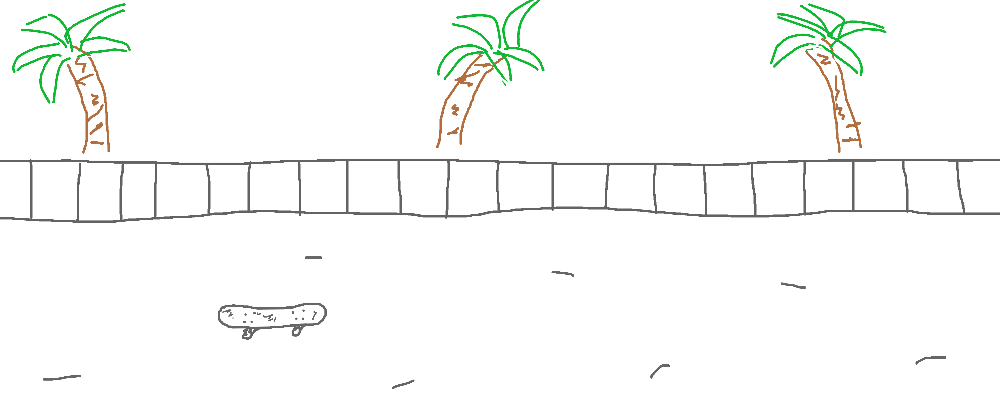
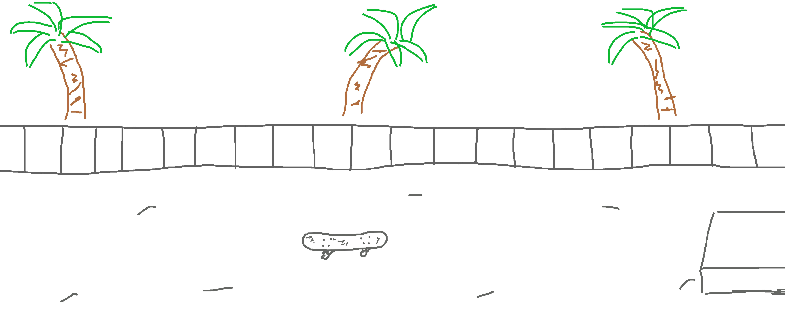
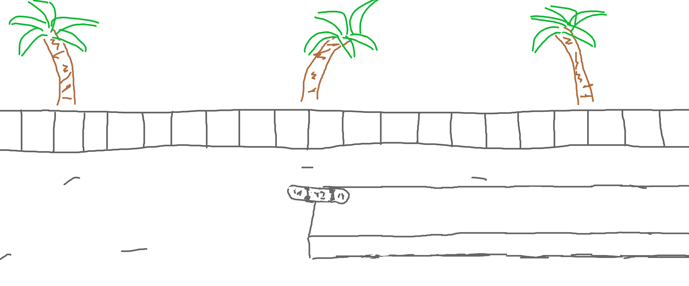
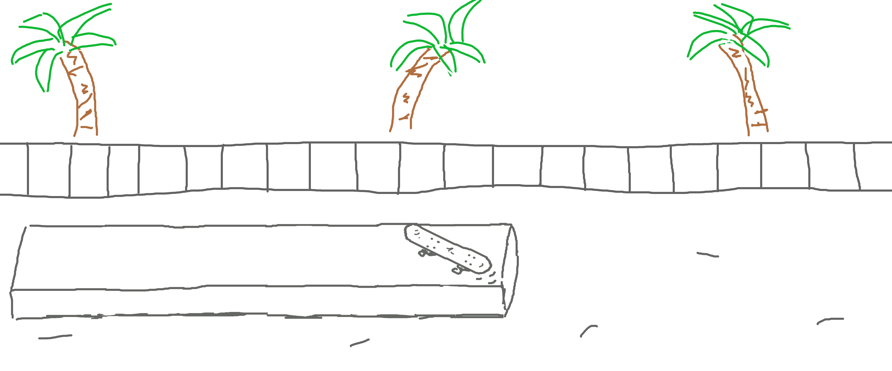
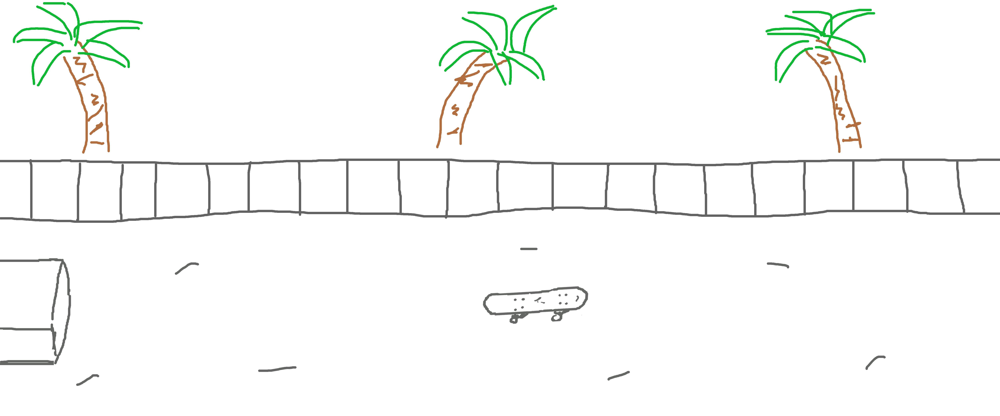
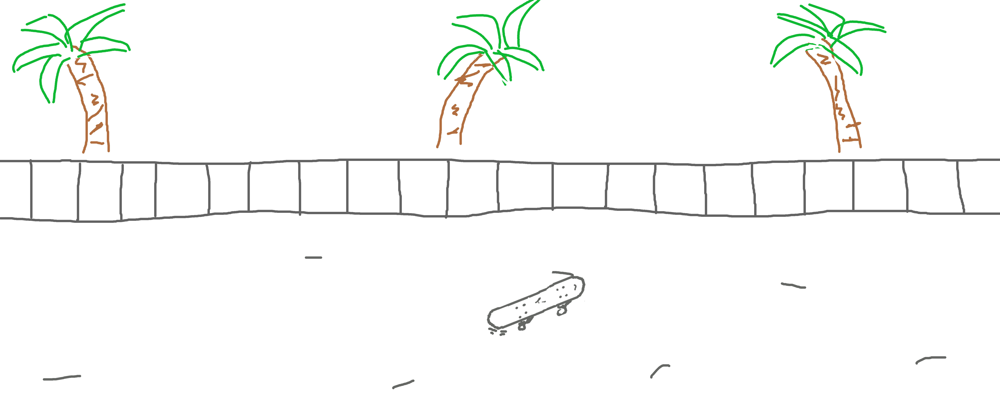
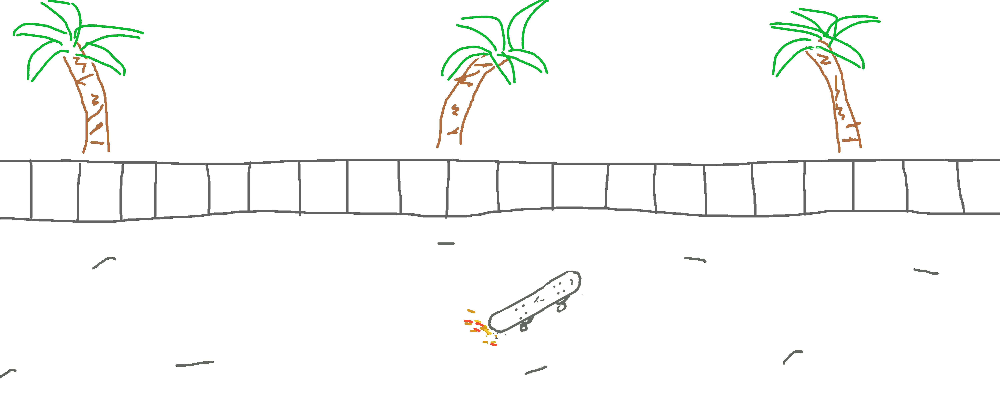
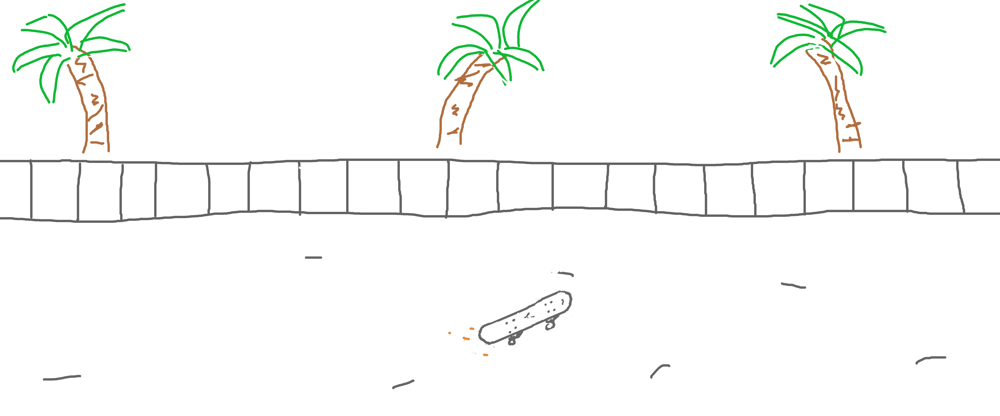
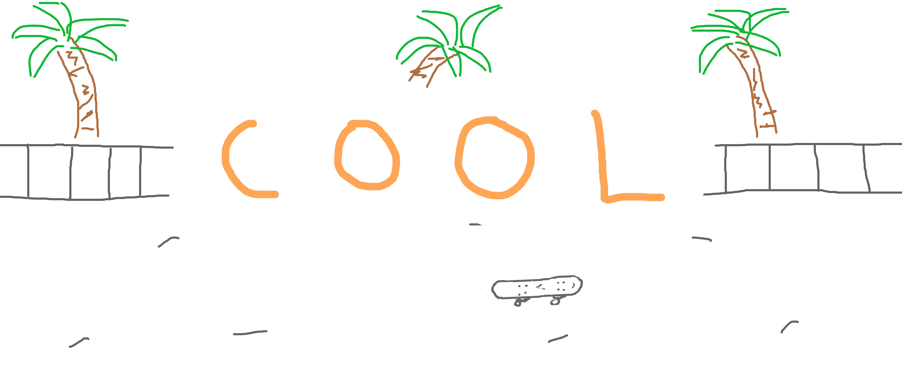

Animation |
Frames Example |
||
|  |  |  |
|  |  |  |
|  |  |  |
Software / SoundsTo draw the still frames I used photoshop cs2. To put the frames together I used an online website to convert the images to a gif. From there, I put the gif into sony vegas 15, and used it to edit together skateboarding sounds I found on youtube. |